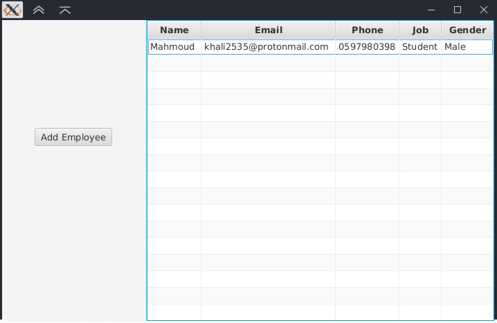

بسم الله الرحمن الرحيم
الجداول في الـJavaFX تسمى TableView وتتكون من عدد من الأعمدة (Table Columns) والتي تتكون بدورها من قيم تسمى خلايا (Cells)..
لعمل جدول جديد نقوم بفتح SceneBuilder ونسحب الجدول TableView من اللائحة Controls الموجودة على اليمين.
ثم نستطيع تعديل طول وعرض الجدول من خلال الضغط على أحد أطراف الجدول ثم السحب باستخدام الماوس, فنسحبه حتى يظهر كما بالصورة
والآن نريد تعديل الأعمدة الموجودة بالجدول , نستطيع تحديد العمود الموجود في الجدول من خلال اللائحة على أسفل اليمين التي تسمى Document من خلال الوصول للجدول والضغط على زر + الموجود بجانبه والضغط على العمود المراد تحديده.
يمكننا إضافة عمود جديد من خلال تكرار عمود موجود بالفعل في الجدول بالضغط بالزر اليمين عليه من لائحة Document ثم اختيار Duplicate.
ويمكن تعديل اسم الـColumn من خلال التعديل على القيمة Text الموجودة في لائحة Proreties الموجودة على اليمين.
والآن سننتقل للكود, علينا إنشاء class باسم الـobject الذي يمثله الـTable على سبيل المثال هنا سنستخدم class Employee.
بحيث يجب على الـclass أن يحتوي على كل الأعمدة الموجودة بالجدول بنفس الاسم من نوع SimpleStringProperty مع ملاحظة أنه يمكن استخدام قيم أخرى ولكننا استخدمنا النصوص ﻷنها تستطيع التعبير عن كل القيم المطلوبة..
ونقوم بكتابة الـconstractor مع الدوال set و get للقيم المطلوبة كما بالصورة التالية.
والآن يجب علينا تعديل ملف FXML باستخدام النتبينز لتعريف الأعمدة, نقوم بفتح الملف كما بالصورة
نريد أن نستخدم خاصية من خصائص الـCell ويمكننا ذلك من خلال وضع الجملة التالية ضمن الـimports كما بالصورة.
<?import javafx.scene.control.cell.*?>
ثم نبحث عن TableView من التاجات الموجودة للوصول إلى التاج فنجد الـTableColumns بالداخل كما بالصورة
نلاحظ أن الـTableColumns التاجات الخاصة بها تنتهي بالرمز />
نقوم بتعديل نهاية التاج إلى نهاية جديدة لنستطيع إدخال تاجات جديدة بالداخل كما بالصورة التالية..
والآن بعدما أصبحت نهاية التاج بالطريقة الجديدة نستطيع إدخال تاج جديد داخل التاج القديم, نقوم بوضع التاج التالي داخل TableColumn
<cellValueFactory></cellValueFactory>
ثم نضع القيمة PropertyValueFactory بداخل التاج السابق بتاج جديد كمل يلي
<PropertyValueFactory property="X" />
حيث X تمثل اسم الصف بحسب الـclass الذي قمنا بعمله مسبقاً (SimpleStringProperty) من كلاس (Employee)
والآن نذهب إلى الـController ونعرف متغير جديد من نوع TableView بحيث يكون الـobject المستخدم فيه من نوع Employee كما بالصورة.
والآن نقوم بإضافة قيمة Employee إلى الجدول من خلال عمل object من كلاس Employee واعطائه القيم ومن ثم إضافته للجدول باستخدام الدالة التالية كما بالصورة التي تليها.
getItems().add()
بعد تشغيل البرنامج الآن عند الضغط على الزر سيتم إضافة Employee جديد بالجدول كما يظهر بالصورة.
للمزيد قم بالرجوع للصفحة الرئيسية
لا تنسونا من صالح دعائكم